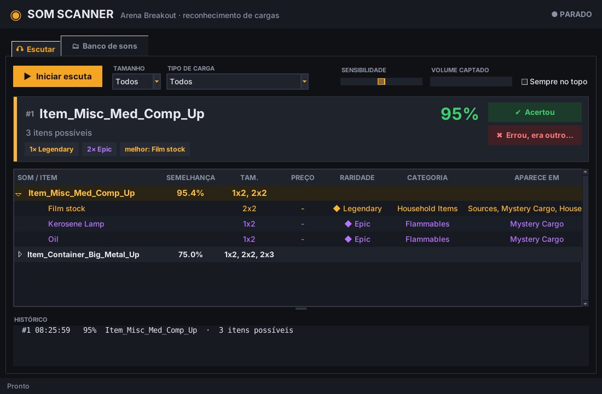

Arraste a carga misteriosa do mercador e o Som Scanner escuta o som, reconhece o grupo e mostra na hora quais itens podem estar dentro, do mais raro ao mais comum.

Sem ficar testando som por som num site: ele faz a comparação sozinho.
Escuta o áudio do PC e, assim que você arrasta a carga, mostra o palpite em menos de um segundo.
Lista todos os itens possíveis com tamanho, raridade colorida, categoria e em quais cargas aparecem.
Escolha o tamanho (1x1 a 3x2) e o tipo de carga para ver só o que realmente pode vir.
Errou? Clique em "Errou, era outro" e mostre o certo. Da próxima vez ele acerta.
Leva um minuto.
SomScanner-Setup.exe e siga o instalador. Não precisa de mais nada.As dúvidas mais comuns.
Não. Ele só escuta o áudio que já sai no seu PC, como se você tivesse decorado os sons. Não lê nem altera nada do jogo. Mesmo assim, o uso é por sua conta: confira os termos do jogo.
Aumente a Sensibilidade e confira os filtros. Se ele chutou errado, use o botão "Errou, era outro" para ensinar o som certo.
Sim. Ele capta o áudio do dispositivo de saída padrão do Windows (fone ou caixa de som).
Configurações do Windows → Aplicativos → Som Scanner → Desinstalar.